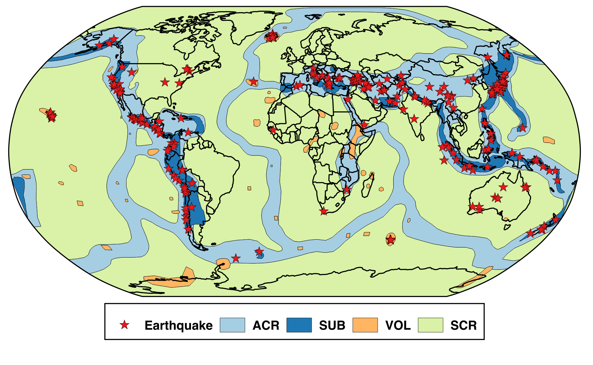
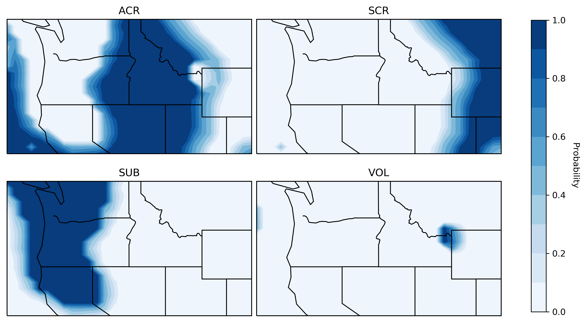
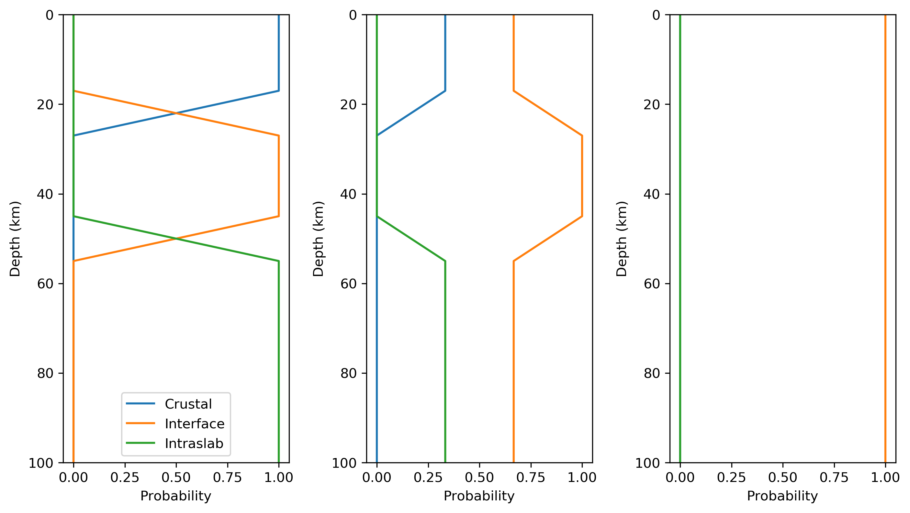

Ground Motion Model Selection¶
GMM Selection Overview¶
Tectonic classification of earthquakes is a key component of the USGS Global ShakeMap system because it serves as the basis for the selection of ground motion prediction equations (GMPEs). GMPE selection has a significant impact on the estimated ground motion intensities. The revised ground motion selection algorithm provides a probability that the earthquake occurred in all possible seismotectonic classifications. These classifications are configured to be associated with an appropriate GMPE (or weighted set of GMPEs, see Ground-Motion Prediction) and the GMPEs associated with each classification are then combined based on the probability associated with each classification.
The select module reads an event’s event.xml file for origin
information and then constructs a GMPE set for the event based on the
event’s residence within, and proximity to, a set of predefined tectonic
regions and user-defined geographic areas. The GMPE set, and the
selection of that GMPE set for use in processing, are written to
model_select.conf in the event’s current directory. Similarly,
the configuration may select an intensity prediction equation module
(IPE), a ground-motion to intensity conversion equation module
(GMICE), and a cross-correlation function (CCF) for the region,
and these, too, will be written to model_select.conf. Any modules
that are not specified for a particular region will default back to
the modules set in the global model.conf.
The behavior of select is controlled by the select.conf
configuration file. See the documentation in select.conf for more on
customizing select.
The tectonic regions, and additional geographic layers, that the event may fall within are defined by the STREC configuration. See the STREC documentation for information on adding additional layers, then use select.conf to customize the ground motion modules that the new layers will use.
Tectonic Regions¶
Fig. 1.13 shows a global map of the first layer of information, which is a set of four mutually exclusive and globally exhaustive classes, which we refer to as tectonic regions: active crustal region (ACR), stable continental region (SCR), subduction (SUB), and volcanic (VOL).
{kind=link}

Fig. 1.13 Map of main tectonic regions.¶
These regions are a simplification of the seismotectonic domains developed by Garcia and others (2012). The approximate mapping between the new tectonic regions and the seismotectonic domains is:
Tectonic Region |
Subtypes |
Seismotectonic domains |
|---|---|---|
Active crustal region (ACR) |
Extensional, Compressional |
ACR (deep) |
ACR (shallow) |
||
ACR (oceanic boundary) |
||
Stable continental region (SCR) |
Marginal, Not marginal |
ACR (oceanic boundary) |
SOR (generic) |
||
Subduction (SUB) |
Crustal, Interface, Intraslab |
ACR deep (above slab) |
ACR oceanic boundary (above slab) |
||
ACR shallow (above slab) |
||
SCR (above slab) |
||
SOR (above slab) |
||
SZ (inland/back-arc) |
||
SZ (on-shore) |
||
SZ (outer-trench) |
||
SZ (generic) |
||
Volcanic (VOL) |
– |
ACR (hot spot) |
Note that currently the only subtypes that are made use of are the subduction zone subtypes.
There are a number of configuration options for how the tectonic regions are
modeled in select.conf. Here is an example of for ACR:
[tectonic_regions]
[[acr]]
horizontal_buffer = 100
vertical_buffer = 5
gmpe = active_crustal_nshmp2014, active_crustal_deep
min_depth = -Inf, 30
max_depth = 30, Inf
ipe = VirtualIPE
gmice = WGRW12
ccf = LB13
where:
horizontal_buffer- The buffer distance (km) that extends into neighboring regions across which the GMPEs are blended.vertical_buffer- The buffer distance (km) that blends the depth dependence of the GMPEs within this tectonic region.gmpe- A list of one or more GMPE sets found in gmpe_sets.conf.min_depth- A list of one or more minimum depths (km) corresponding to the GMPEs listed undergmpe.max_depth- A list of one or more maximum depths (km) corresponding to the GMPEs listed undergmpe.ipe- An intensity prediction module; must be found in the collection of ipe_modules inmodules.conf.gmice- A ground motion to intensity module; must be found in the collection of gmice_modules inmodules.conf.ccf- A cross-correlation module; must be found in the collection of ccf_modules in modules.conf.
The process by which select builds a GMPE set is somewhat complicated.
STREC reports the tectonic region the earthquake lies within, as well
as the distance to the closest polygon of the other tectonic region
types. For example, for an earthquake in California STREC would report
that the event was zero distance from region ‘acr’
(which is to say that it lies within the active crustal region), but
STREC would also report distances to regions ‘scr’ (stable continental),
‘volcanic’, and ‘subduction’. Each non-subduction region is also
configured with a “horizontal buffer.” The buffer determines how far
the region extends into neighboring regions. The buffer for subduction
regions is always zero. If the event happens within the buffer
of a neighboring region, the distance and buffer are used to build a
weighted combination of the GMPE sets representing the regions in
question.
For example, if an earthquake occurred within the ‘scr’ region, but was 40 km from the “acr” region, and the ‘acr’ region’s horizontal buffer was 100 km, then the ‘scr’ region would be given a weight of 1.0, and the ‘acr’ region would be given (100 - 40) / 100 = 0.6. Normalizing by the total, the final weights would be 0.625 ‘scr’ and 0.375 ‘acr’.
Fig. 1.14 maps the probabilities for the main tectonic regions in the northwest US. This illustrates how the horizontal buffer smoothly transitions between the regions.
{kind=link}

Fig. 1.14 Maps of the probability of the four main tectonic regions in the northwest US. Top left: active crustal region (ACR); Top right: stable continental region(SCR); Bottom left: subduction (SUB); Bottom right: volcanic (VOL).¶
Each region’s GMPE set is in turn comprised of a weighted set of other
GMPE sets, based on the earthquake’s depth. For each of the non-subduction
regions, select builds a weighted combination of the configured GMPE sets
based on the event’s depth. If the earthquake falls within a subduction
region, STREC reports the probabilities that the earthquake is crustal, on
the subduction interface, or within the subducting slab. select combines
the GMPE sets for each of these regimes, weighted by their probabilities,
into a subduction GMPE set that is specific to the earthquake’s location.
Subduction Subtypes¶
Within subduction zones, we distribute the probability given to the subduction zone tectonic region between its three subtypes. By default, this primarily relies on the Hayes (2018) Slab2 model.
Although this rarely occurs, events that are located in a subduction zone
but the slab model is not defined, we compute the probability of the
interface subtype as a function of depth and magnitude. The relevant section
of select.conf is:
[subduction]
default_slab_depth = 36.0
[[p_int_mag]]
x1 = 7.0
p1 = 0.0
x2 = 8.5
p2 = 1.0
[[p_int_dep_no_slab_upper]]
x1 = 17.0
p1 = 0.0
x2 = 27.0
p2 = 1.0
[[p_int_dep_no_slab_lower]]
x1 = 45.0
p1 = 0.0
x2 = 55.0
p2 = -1.0
These parameters define taper functions that give more probability to interface for larger magnitudes, crustal for shallow events, interface for intermediate depth events, and slab for deeper events, as illustrated in Fig. 1.15.
{kind=link}

Fig. 1.15 Profiles showing the probability of crustal, interface, and interslab subuction subtypes (assuming the probability of subduction is 1.0) with depth for a magnitude of 7 (left), 8 (center), and 9 (right).¶
The slab model is defined for most locations in subduction zones. When available, we distribute the probability the subtypes with a series of heuristic steps using the following parameters:
The distance between the interface in the slab model and the hypocentral depth; see the
p_int_hyposection ofselect.conf.The angle of rotation between the plane tangent to the slab at the location of the earthquake and the focal mechanism; see the
p_int_kagansection ofselect.conf(the angle is sometimes called the “Kagan angle”).The position of the hypocenter relative to the maximum depth of the seismogenic zone, as given by the slab mode; see the
p_int_szsection ofselect.conf.The position of the hypocenter relative to interface in the slab model; see the
p_crust_slabsection ofselect.conf.The absolute depth of the hypocenter; see the
p_crust_hyposection ofselect.conf.
Because of the unique treatment of the tectonic subtypes for subduction
zones, its section in select.conf includes some additional settings:
[[subduction]]
horizontal_buffer = 100
vertical_buffer = 5
gmpe = subduction_crustal, subduction_interface_nshmp2014, subduction_slab_nshmp2014
min_depth = -Inf, 15, 70
max_depth = 15, 70, Inf
ipe = VirtualIPE
gmice = WGRW12
ccf = LB13
use_slab = True
[[[crustal]]]
gmpe = subduction_crustal
[[[interface]]]
gmpe = subduction_interface_nshmp2014
[[[intraslab]]]
gmpe = subduction_slab_nshmp2014
Note that the additionl subsections (e.g., [[[crustal]]]) and their
associated GMPEs after the use_slab key are used when the slab model is
being used to distribute the subduction probabilities. In this case, the
results based on the previously listed gmpe, min_depth and
max_depth are overwritten. If use_slab is set to False, then subtype
subsections are ignored and the subduction zone is treated like all the
other tectonic regions (e.g., configurable with the gmpe, min_depth,
and max_depth keys).
Geographic Regionalization¶
The select module also considers the earthquake’s presence within, or
distance from, any number of user-defined geographic layers. If the
earthquake is within a layer, that layer’s parameters (as configured in
select.conf) replace any or all of the parameters of the corresponding
tectonic regions, and the calculation of a weighted GMPE set proceeds as
before. For example, the layer section of select.conf might contain:
[layers]
[[california]]
horizontal_buffer = 50
[[[scr]]
horizontal_buffer = 25
[[[acr]]]
horizontal_buffer = 25
gmpe = Special_California_GMPE
min_depth = -Inf
max_depth = Inf
ipe = Allen2012
gmice = WRGW12
If an earthquake falls within the ‘california’ layer, the tectonc regions ‘scr’ and ‘acr’ would have their horizontal buffers reset to 25 km and, in addition, the ‘acr’ region would have its GMPE selection reset to the GMPE set ‘Special_California_GMPE’ for earthquakes of all depths. Similarly, the IPE would be set to “Allen2012” and the GMICE to “WGRW12”.
If the earthquake is not inside a custom geographic layer, but within the horizontal buffer distance of one, the GMPE sets for the modified and unmodified tectonic regions are each determined separately and a weighted combination of the two is computed (where the weights are based on the distance and the horizontal buffer, as described above).
Unlike the tectonic regions, the geographic layers consider only the nearest layer. If an earthquake falls within more than one layer (possible if layers are nested), the first one encountered in select.conf is used and any other(s) will be ignored.
The polygons for geograhpic regionalization are located in the
data/layers subdirectory of the current shakemap profile install
directory. The files are associated to the key name within the
[layers] section of select.conf. Using the example above, when
select sees the [[california]] key name, it will look for a file
called california.wkt in <install_dir>/data/layers.